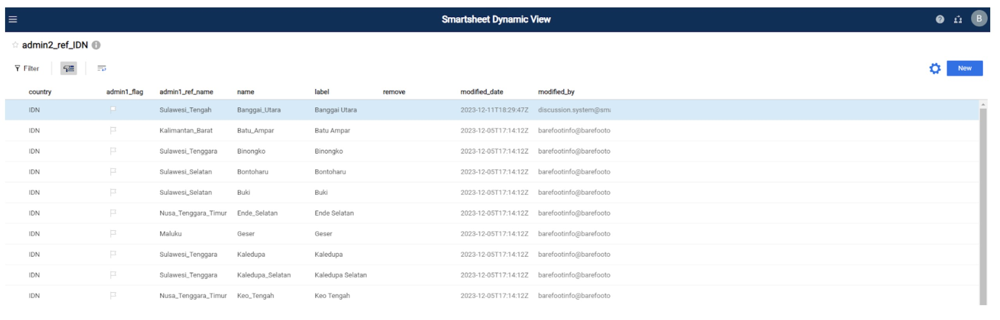

Arquivos de referência
Actualizar Ficheiros De Referência
Todos os arquivos de referência são atualizados no Smartsheet Dynamic View. Os ficheiros de referência servem como entradas para listas suspensas em formulários KoboToolbox e contêm dados que são adicionados aos conjuntos de dados principais através de junções. Contêm informações completas sobre os níveis administrativos das comunidades piscatórias (País, Província, Distrito, Aldeia), locais de desembarque, zona de pesca, pescadores, compradores, colectores de dados, espécies, zonas de gestão, tipos de artes e organizações parceiras. As etapas abaixo descrevem como atualizar os arquivos de referência com novas informações.
Etapa 1: Crie uma conta gratuita do smartsheet.
Uma conta gratuita pode ser criada em https://www.smartsheet.com/
Selecione “Experimente o smartsheet gratuitamente”
Passo 2: Forneça à Blue Ventures (BV) o endereço de E-mail que utilizou para criar a sua conta smartsheet.
A BV irá então partilhar os ficheiros de referência associados à sua organização.
Para visualizar seus arquivos de referência, você precisará entrar no smartsheet Dynamic View usando suas credenciais do smartsheet: https://dynamicview.smartsheet.com/login
Uma vez conectado ao Dynamic View (não ao aplicativo smartsheet), você verá uma lista de arquivos de referência compartilhados com sua conta (Figura 1).
Figura 1: lista de ficheiros de referência na vista dinâmica

Etapa 3: Clique em um arquivo de referência para fazer atualizações
Uma vez aberto, você pode clicar em cada linha para fazer edições nos dados existentes ou clicar no botão “Novo” no canto superior direito para adicionar novos dados (Figura 2).
Um painel de detalhes aparecerá no lado direito, onde você inserirá as informações necessárias (Figura 3; Tabela 1). Selecione “Salvar” no canto inferior direito do painel de detalhes quando terminar de atualizar.
Para deixar um comentário ou fazer perguntas à equipa BV, selecione o separador “comentários” no painel de detalhes. Todos os indivíduos com quem o ficheiro de referência é partilhado, incluindo a equipa BV, receberão uma notificação quando um comentário for feito, pelo que não há necessidade de marcar qualquer indivíduo em particular.
Figura 2: Exemplo de visualização do admin2_ref na Visualização Dinâmica

Figura 3: Exemplo de visualização do painel de detalhes admin2_ref na Visualização Dinâmica

Etapa 4: responder a solicitações de atualização quando os dados estiverem ausentes ou incorretos, ou responder a um comentário.
Se existirem informações incompletas ou incorrectas que sejam essenciais para preencher os menus suspensos da Kobo ou para junções, ou se for feito um comentário na folha, será enviado um pedido de actualização a todos os utilizadores apropriados, solicitando-lhes que actualizem as informações ou respondam a um comentário (Figura 4). Por padrão, todos com acesso aos seus arquivos de referência receberão a solicitação de atualização.
Uma prévia dos dados que precisam ser atualizados ou respondidos aparecerá abaixo da mensagem de E-mail, mas você não poderá atualizar nenhum dado diretamente no e-mail
- Na parte inferior do E-mail, há um link para “ir para a planilha”; no entanto, a planilha subjacente tem acesso restrito. Reveja os seus dados ou responda ao comentário através de um pedido aberto.
Clique no botão” Abrir pedido ” na mensagem de E-mail.
Uma nova janela do navegador da internet será aberta com uma configuração semelhante a um formulário para cada entrada (Figura 5)
Revise as colunas do BV e preencha as colunas editáveis.
Clique em avançar na parte inferior da tela para percorrer cada entrada que precisa ser atualizada.
Para pular uma entrada (por exemplo, se você ainda não tem certeza de qual resposta escolher) clique em “Avançar” sem fazer uma seleção nas colunas editáveis. A próxima entrada que precisa ser atualizada aparecerá.
Se você precisar sair da página ou parar antes que todas as entradas tenham sido atualizadas, suas opções devem ser salvas na próxima vez que você reabrir a solicitação. Ao abrir para continuar, basta clicar em” Avançar ” até encontrar uma entrada que precisa ser atualizada.
Quando chegar à última entrada, clique em “Concluído”. Uma mensagem pop-up aparecerá perguntando se você está pronto para enviar sua atualização?’:
Clique em “Voltar” Se precisar rever
Clique em “Enviar atualização” para enviar suas atualizações.
Suas atualizações são automaticamente anexadas ao arquivo de referência e você pode visualizá-las na Visualização Dinâmica
Figura 4: exemplo de E-mail “Pedido de atualização” quando é necessário corrigir informações ou responder a comentários.

Tabela 1: As colunas primárias em cada um dos arquivos de referência. O tipo de coluna “BV” é gerenciado pela Blue Ventures e não é editável. Para solicitar alterações em qualquer uma das colunas “BV”, deixe um comentário. Somente colunas com o tipo “editável” podem ser editadas. O tipo de coluna “auto” é preenchido automaticamente.
| Nome do campo | Descrição do campo | Tipo de campo |
|---|---|---|
| Todos os ficheiros de referência | ||
| latest_comment | Esta coluna armazena o último comentário que foi feito para essa linha. Para ver toda a discussão de comentários para essa linha, basta clicar em qualquer lugar na linha. O painel de detalhes aparecerá, como acontece na Figura 3. Clique na guia” Comentários ” para ver todos os comentários dessa linha. | auto |
| modified_date | Data da última edição | auto |
| modified_by | Usuário que fez a última edição | auto |
| active | Selecione ” Sim ” se os dados estiverem a ser recolhidos a partir desta pessoa/área. Se os dados já não estiverem a ser recolhidos a partir deste indivíduo/área e pretender ocultá-los na lista pendente Kobo, seleccione “Não.” | editável |
| remove | Escolha ” Sim ” se quiser remover o registo. Os registos só devem ser removidos se o nome estiver incorrecto ou se for uma duplicata de um registo existente. | editável |
| admin1_ref | ||
| country | Código de país ISO, que é um código de combinação de letras reconhecido internacionalmente | BV |
| name | Nome do admin1, o nível administrativo mais alto depois do país (ou seja, província) sem espaços e sem pontuação, apenas sublinhados | BV |
| label | Nome de admin1, o nível administrativo mais alto depois do país (ou seja, província) com espaços e pontuação permitidos. Por favor, não altere o rótulo a menos que seja absolutamente necessário, pois as junções são baseadas nisso. | editável |
| partner_flag | O sinalizador será vermelho se o valor” partner ” não existir no org_ref | BV |
| partner | Nome do parceiro sem espaços e sem pontuação, apenas sublinhados. A lista suspensa está ligada à coluna” Nome ” no org_ref. | editável |
| admin2_ref | ||
| country | Código de país ISO, que é um código de combinação de letras reconhecido internacionalmente | BV |
| name | Nome do admin2, o nível administrativo mais alto após admin1 (ou seja, Distrito) sem espaços e sem pontuação, apenas sublinhados | BV |
| label | Nome do admin2, o nível administrativo mais alto depois de admin1 (ou seja, distrito) com espaços e pontuação permitidos. Por favor, não altere o rótulo, a menos que seja absolutamente necessário, pois as junções são baseadas nisso. | editável |
| admin1_flag | O sinalizador ficará vermelho se o valor” admin1_ref_name ” não existir no admin1_ref | BV |
| admin1_ref_name | Nome Admin1 sem espaços e sem pontuação, apenas sublinhados. A lista suspensa está ligada à coluna” Nome ” no admin1_ref. | editável |
| admin3_ref | ||
| country | Código de país ISO, que é um código de combinação de letras reconhecido internacionalmente | BV |
| name | Nomes Admin2 e admin3 combinados sem espaços e sem pontuação, apenas sublinhados.O admin3 é o nível administrativo mais alto depois do admin2 (ou seja, Aldeia). | BV |
| label | Nome do admin3, o nível administrativo mais alto depois de admin2 (ou seja, aldeia) com espaços e pontuação permitidos. Por favor, não altere o rótulo, a menos que seja absolutamente necessário, pois as junções são baseadas nisso. | editável |
| admin1 | Nome Admin1 com espaços e pontuação permitidos. Isso é extraído do admin1_ref e preenchido automaticamente com base no admin2 escolhido. | BV |
| admin1_ref_name | Nome Admin1 sem espaços e sem pontuação, apenas sublinhados. Isso é extraído do admin1_ref e preenchido automaticamente com base no admin2 escolhido | BV |
| admin2_flag | O sinalizador ficará vermelho se o valor” admin2 ” não existir no admin2_ref. | BV |
| admin2 | Nome Admin2 com espaços e pontuação permitidos. A lista suspensa é conectada à coluna” rótulo ” no admin2_ref. | editável |
| admin2_ref_name | Nome Admin2 sem espaços e sem pontuação, apenas sublinhados. Isso é extraído do admin2_ref e preenchido automaticamente com base no admin2 escolhido. | BV |
| admin3_lat | Latitude do admin3 | editável |
| admin3_long | Longitude do admin3 | editável |
| landings_mon | Seleccione ” Sim ” se pretender que o admin3 apareça no menu pendente do formulário de monitorização de aterragens Kobo. | editável |
| landings_prof | Seleccione ” Sim ” se pretender que o admin3 apareça no menu pendente do formulário de criação de perfil Kobo landings. | editável |
| comm_prof | Seleccione ” Sim ” se pretender que o admin3 apareça no menu pendente do formulário de criação de perfil da Comunidade Kobo. | editável |
| hhs | Seleccione ” Sim ” se pretender que o admin3 apareça no menu pendente do formulário de inquérito aos agregados familiares Kobo. | editável |
| buyer_ref | ||
| country | Código de país ISO, que é um código de combinação de letras reconhecido internacionalmente | BV |
| name | Nome do comprador sem espaços e sem pontuação, apenas sublinhados | BV |
| label | Nome do comprador com espaços e pontuação permitidos. Por favor, não altere o rótulo, a menos que seja absolutamente necessário, pois as junções são baseadas nisso. | editável |
| buyer_gender | Sexo do comprador; ‘male’ (masculino), ‘female’ (feminino), ‘nonbinary’ (não binário) ou ‘business_nogender’ | editável |
| gender_flag | A bandeira será vermelha se o valor buyer_gender for diferente para o mesmo comprador (ou seja, se Raymond Scott em admin3= Boston tem gender=male, mas Raymond Scott em admin3=Miami tem gender=female, a bandeira será vermelha porque os sexos não são os mesmos para o mesmo comprador). | BV |
| admin1 | Nome Admin1 onde o comprador compra, com espaços e pontuação permitidos. Isso é extraído do admin1_ref e preenchido automaticamente com base no admin3_ref_name escolhido. | BV |
| admin2 | Nome Admin2 de onde o comprador compra, com espaços e pontuação permitidos. Isso é extraído do admin2_ref e preenchido automaticamente com base no admin3_ref_name escolhido. | BV |
| admin3 | Nome Admin3 onde o comprador compra, com espaços e pontuação permitidos. Isso é extraído do admin3_ref e preenchido automaticamente com base no admin3_ref_name escolhido. | BV |
| admin3_ref_name | Nomes Admin2 e admin3 combinados sem espaços e sem pontuação, apenas sublinhados.A lista suspensa está ligada à coluna” Nome ” no admin3_ref. | editável |
| admin3_flag | O sinalizador ficará vermelho se o valor” admin3_ref_name ” não existir no admin3_ref. | BV |
| fisher_ref | ||
| country | Código de país ISO, que é um código de combinação de letras reconhecido internacionalmente | BV |
| name | Nome do pescador sem espaços e sem pontuação, apenas sublinhados | BV |
| label | Nome do pescador com espaços e pontuação permitidos. Por favor, não altere o rótulo, a menos que seja absolutamente necessário, pois as junções são baseadas nisso. | editável |
| fisher_gender | Sexo do pescador; ‘male’ (masculino), ‘female’ (feminino), ‘nonbinary’ (não binário) ou ‘business_nogender’ | editável |
| gender_flag | A bandeira será vermelha se o valor fisher_gender for diferente para o mesmo pescador (ou seja, se Raymond Scott em admin3= Boston tem gender=male, mas Raymond Scott em admin3=Miami tem gender=female, a bandeira será vermelha porque os sexos não são os mesmos para o mesmo pescador). | BV |
| admin1 | Nome Admin1 onde o pescador pousa a sua captura, com espaços e pontuação permitidos. Isso é extraído do admin1_ref e preenchido automaticamente com base no admin3_ref_name escolhido. | BV |
| admin2 | Nome Admin2 onde o pescador pousa a sua captura, com espaços e pontuação permitidos. Isso é extraído do admin2_ref e preenchido automaticamente com base no admin3_ref_name escolhido. | BV |
| admin3 | Nome Admin3 onde o pescador pousa a sua captura, com espaços e pontuação permitidos. Isso é extraído do admin3_ref e preenchido automaticamente com base no admin3_ref_name escolhido. | BV |
| admin3_ref_name | Nomes Admin2 e admin3 combinados sem espaços e sem pontuação, apenas sublinhados.A lista suspensa está ligada à coluna” Nome ” no admin3_ref. | editável |
| admin3_flag | O sinalizador ficará vermelho se o valor” admin3_ref_name ” não existir no admin3_ref. | BV |
| data_collector_ref | ||
| country | Código de país ISO, que é um código de combinação de letras reconhecido internacionalmente | BV |
| name | Nome do coletor de dados sem espaços e sem pontuação, apenas sublinhados | BV |
| label | Nome do coletor de dados com espaços e pontuação permitidos. | editável |
| gender | Sexo do coletor de dados; ‘male’ (masculino), ‘female’ (feminino), ‘nonbinary’ (não binário) ou ‘business_nogender’ | editável |
| admin3_flag | O sinalizador ficará vermelho se o valor” admin3_ref_name ” não existir no admin3_ref. | BV |
| admin3_ref_name | Nomes Admin2 e admin3 combinados sem espaços e sem pontuação, apenas sublinhados.A lista suspensa está ligada à coluna” Nome ” no admin3_ref. | editável |
| landings_mon | Seleccione ” Sim ” se pretender que o colector de dados apareça no menu pendente do formulário de monitorização de aterragens Kobo. | editável |
| landings_prof | Seleccione ” Sim ” se pretender que o colector de dados apareça no menu pendente do formulário de criação de perfil Kobo landings | editável |
| hhs | Seleccione ” Sim ” se pretender que o colector de dados apareça no menu pendente do formulário de inquérito aos agregados familiares Kobo | editável |
| comm_prof | Seleccione ” Sim ” se pretender que o colector de dados apareça no menu pendente do formulário de criação de perfil da Comunidade Kobo | editável |
| fishing_ground_ref | ||
| country | Código de país ISO, que é um código de combinação de letras reconhecido internacionalmente | BV |
| name | Nome da zona de pesca sem espaços e sem pontuação, apenas sublinhados | BV |
| label | Nome da zona de pesca com espaços e pontuação permitidos. Por favor, não altere o rótulo, a menos que seja absolutamente necessário, pois as junções são baseadas nisso. | editável |
| admin3_flag | O sinalizador ficará vermelho se o valor” admin3_ref_name ” não existir no admin3_ref. | BV |
| admin3_ref_name | Nomes Admin2 e admin3 combinados sem espaços e sem pontuação, apenas sublinhados.A lista suspensa está ligada à coluna” Nome ” no admin3_ref. | editável |
| partner_flag | O sinalizador será vermelho se o valor” partner ” não existir no org_ref | BV |
| partner | Nome do parceiro sem espaços e sem pontuação, apenas sublinhados. A lista suspensa está ligada à coluna” Nome ” no org_ref. | editável |
| latitude | Latitude da zona de pesca | editável |
| longitude | Longitude da zona de pesca | editável |
| gear_ref | ||
| country | Código de país ISO, que é um código de combinação de letras reconhecido internacionalmente | BV |
| name | Nome Local da engrenagem sem espaços e sem pontuação, apenas sublinhados | BV |
| label | Nome Local da engrenagem com espaços e pontuação permitidos. Por favor, não altere o rótulo, a menos que seja absolutamente necessário, pois as junções são baseadas nisso. | editável |
| gear_global | Nome em inglês da engrenagem sem espaços e sem pontuação, apenas sublinhados. Esta é uma lista suspensa predefinida. Por favor, escolha um que melhor se adapte ao equipamento local, ou comente se não tiver certeza. | editável |
| gear_detail | Descrição da arte | editável |
| species_group | As espécies agrupam os alvos das artes. Se uma engrenagem visar várias espécies, crie uma nova linha de dados para cada grupo de espécies. A lista suspensa está ligada à coluna” species_group ” no species_ref. | editável |
| species_flag | O sinalizador será vermelho se o” species_group ” escolhido não existir no species_ref. | BV |
| partner | Nome do parceiro sem espaços e sem pontuação, apenas sublinhados. A lista suspensa está ligada à coluna” Nome ” no org_ref. | editável |
| partner_flag | O sinalizador será vermelho se o valor” partner ” não existir no org_ref | BV |
| landing_site_ref | ||
| country | Código de país ISO, que é um código de combinação de letras reconhecido internacionalmente | BV |
| name | Nome do local de aterragem sem espaços e sem pontuação, apenas sublinhados | BV |
| label | Nome do local de aterragem com espaços e pontuação permitidos | editável |
| admin3_flag | O sinalizador ficará vermelho se o valor” admin3_ref_name ” não existir no admin3_ref. | BV |
| admin3_ref_name | Nomes Admin2 e admin3 combinados sem espaços e sem pontuação, apenas sublinhados.A lista suspensa está ligada à coluna” Nome ” no admin3_ref. | editável |
| management_ref | ||
| country | Código de país ISO, que é um código de combinação de letras reconhecido internacionalmente | BV |
| partner_ID | Nome do parceiro sem espaços e sem pontuação, apenas sublinhados. A lista suspensa está ligada à coluna” Nome ” no org_ref. | editável |
| partner_flag | O sinalizador será vermelho se o valor” partner ” não existir no org_ref | BV |
| management_id_unique | Nome único da área de gestão e datas de entrada em vigor. Mais especificamente, contém as seguintes informações separadas por um sublinhado: management_id, management_method, close_date e open_date. | BV |
| management_id | Nome único da área de gestão com espaços e pontuação permitidos. Por favor, não altere o nome a menos que seja absolutamente necessário, pois as junções são baseadas nisso. | editável |
| admin3_fish | A lista dos admin3s que pescam na área de gestão. | editável |
| admin3_fish_flag | O sinalizador ficará vermelho se um dos admin3s listados na coluna” admin3_fish ” não existir no admin3_ref. | BV |
| admin3_govern | A lista de admin3s que têm um papel na gestão do evento de gestão. | editável |
| admin3_govern_flag | O sinalizador ficará vermelho se um dos admin3s listados na coluna” admin3_govern ” não existir no admin3_ref. | BV |
| management_fishing_ground | A lista das zonas de pesca associadas ao evento de gestão. A lista suspensa está ligada à coluna” Nome ” no fishing_ground_ref. | editável |
| fishing_ground_flag | A bandeira será vermelha se uma das zonas de pesca enumeradas em “management_fishing_ground” não existir no fishing_ground_ref. | BV |
| management_method | O tipo de método de gestão utilizado durante o evento. A lista predefinida inclui: encerramento temporário, sem zona de captura, restrição de Artes, acesso gerido, proibição de colheita ou proibição de desflorestação. | editável |
| regulation_type | O tipo de regulamentação legal. A lista predefinida inclui: regulamento do chefe da aldeia, decreto do chefe da aldeia, Regulamento conjunto do chefe da aldeia ou nenhum. | editável |
| target_group | Grupo de espécies-alvo para a zona gerida. Isso pode incluir ‘todos’, um ou vários grupos de espécies. A lista suspensa está ligada ao species_ref principal e inclui grupos de espécies de todos os parceiros. | editável |
| target_species | Espécies-alvo para a zona gerida. Isso pode incluir ‘All_species’, uma ou várias espécies científicas. A lista suspensa está ligada ao species_ref principal e inclui espécies de todos os parceiros. | editável |
| species_flag | O sinalizador será vermelho se o” target_species ” escolhido não for referenciado no species_ref do parceiro. | BV |
| target_habitat | Habitat-alvo para a zona gerida. A lista suspensa predefinida inclui as opções de habitat: ‘Recife, ervas marinhas, manguezais, lamaçal, areia, águas profundas ou outras’. | editável |
| management_area_ha | Dimensão da superfície gerida medida em hectares (ha) | editável |
| close_date | Data de encerramento da área gerida | editável |
| open_date | Data de abertura da zona gerida | editável |
| management_lat | Latitude da área de gestão | editável |
| management_long | Longitude da área de gestão | editável |
| org_ref | ||
| country | Código de país ISO, que é um código de combinação de letras reconhecido internacionalmente | BV |
| name | Nome do parceiro / organização sem espaços e sem pontuação, apenas sublinhados | BV |
| label | Nome do parceiro / organização com espaços e pontuação permitidos. Por favor, não altere o rótulo, a menos que seja absolutamente necessário, pois as junções são baseadas nisso. | editável |
| species_group | Os grupos de espécies sobre os quais o parceiro recolhe dados. A lista suspensa está ligada à coluna” species_group ” no species_ref. Selecione Todos os grupos se eles quiserem que todas as espécies no species_ref apareçam. | editável |
| species_ref | ||
| country | Código de país ISO, que é um código de combinação de letras reconhecido internacionalmente | BV |
| partner | Nome do parceiro sem espaços ou pontuação, apenas sublinhados. As listas suspensas de espécies são filtradas pelo parceiro. Alguns países têm múltiplos parceiros que partilham uma lista de espécies. Nesse caso, você verá o código do país em vez do parceiro, e toda a lista de espécies será exibida para cada parceiro nesse país, a menos que certos grupos de espécies sejam especificados na coluna “species_group” no org_ref. | BV |
| habitat | Tipo de Habitat associado à espécie | BV |
| name | Nome Local e nome da espécie combinados com um sublinhado, sem outra pontuação ou espaços. | BV |
| label | Nome Local com o nome da espécie entre parênteses | BV |
| species_group | Espécies categorizadas em grupos com base em sua biologia, sem espaços ou pontuação, apenas sublinhados. Este campo é utilizado para ajudar a filtrar determinadas opções de resposta no Kobo. | BV |
| species_flag | O sinalizador será vermelho se o” species_group ” escolhido não for referenciado no gear_ref. Isto significa que todas as artes indicadas no gear_ref serão apresentadas para este grupo de espécies. Para mostrar apenas as engrenagens que visam este grupo de espécies, adicione o grupo de espécies ao gear_ref. | BV |
| local_name | Nome da espécie Local com espaços e pontuação permitidos | editável |
| admin1-3 | Nome do admin1, 2 ou 3 sem espaços ou pontuação, apenas sublinhados. A lista suspensa está ligada à coluna” Nome ” no admin_ref correspondente. Este campo será exibido apenas para parceiros que desejam a lista suspensa de espécies filtrada por esse administrador. | editável |
| common_english | Nome comum da espécie em inglês com espaços e pontuação permitidos | BV |
| scientific_family | Nome de família de uma espécie com espaços e pontuação permitidos | BV |
| scientific_species | Nome científico da espécie com espaços e pontuação permitidos. Se a espécie for desconhecida, o género ou a família também podem ser introduzidos. Se apenas o género for conhecido, escreva o nome do género seguido de” sp “(em oposição a” spp ” ou sp.”). Se apenas a família for conhecida, escreva o nome da família (ou seja, Lutjanidae). | editável |
| length_limit_max | Limite máximo de comprimento (cm) utilizado para as advertências de valor. Consulte lw_ref para obter mais informações. | BV |
| length_limit_min | Limite mínimo de comprimento (cm) utilizado para as advertências de valor. Consulte lw_ref para obter mais informações. | BV |
| weight_limit_max | Limite máximo de peso (kg) utilizado para avisos de valor com base nos valores ‘length_limit_max’, ‘a’ e ‘b’, calculados automaticamente no Smartsheet utilizando a fórmula “=(([length_limit_max]@row ^ B@row) * a@row) / 1000”. Consulte lw_ref para obter mais informações. | BV |
| weight_limit_min | Limite mínimo de peso (kg) utilizado para avisos de valor com base nos valores ‘length_limit_min’, ‘a’ e ‘b’, calculados automaticamente no Smartsheet utilizando a fórmula”=(([length_limit_min]@row ^ B@row) * a@row) / 1000”. Consulte lw_ref para obter mais informações. | BV |
| avg_weight | Peso médio (kg), calculado automaticamente no Smartsheet utilizando a fórmula “=([weight_limit_max]@row + [weight_limit_min]@row) / 2”. Consulte lw_ref para obter mais informações. | BV |
| translations_ref | ||
| english | A tradução em Inglês para “adicionar novo”, “não sei”, “não está à venda”, etc. | BV |
| country language | A tradução da língua do país para “adicionar novo”, “não sei”, “não está à venda”, etc. | editável |
| ref_sheet | A folha de referência com a qual a tradução será mesclada para aparecer na lista suspensa apropriada em Kobo | BV |
| min_max_ref | ||
| country | Código de país ISO, que é um código de combinação de letras reconhecido internacionalmente | BV |
| partner | Nome do parceiro sem espaços ou pontuação, apenas sublinhados. | BV |
| min | O preço mínimo baseado em species_group | editável |
| max | O preço máximo baseado em species_group | editável |
| species_group | O grupo de espécies ao qual se aplica o aviso min/max. Para adicionar um novo grupo, por favor, comente e informe o BFO. | BV |
| category | Preço por kg ou preço por indivíduo (os avisos de peso e comprimento das espécies são aplicados no back-end através de dados da literatura) | editável |
| processing | O campo de transformação define a forma como o peixe ou Invertebrado é vendido. As opções incluem ‘whole, partially_processed, filet, tail ou fin’. | editável |
| lw_ref | ||
| species | Nome científico da espécie com espaços e pontuação permitidos. Se a espécie for desconhecida, o género ou a família também podem ser introduzidos. Se apenas o género for conhecido, escreva o nome do género seguido de” sp “(em oposição a” spp ” ou sp.”). Se apenas a família for conhecida, escreva o nome da família (ou seja, Lutjanidae). | BV |
| genus | Nome do género da espécie, proveniente da função rfishbase ’ load_taxa ()’. | BV |
| family | Nome de família da espécie, proveniente da função rfishbase ‘load_taxa()’. | BV |
| common_name | Nome comum da espécie em inglês com espaços e pontuação, proveniente da tbl fishbase ‘comnames’ utilizando a coluna rank para seleccionar o nome favorável por espécie entre os vários nomes comuns disponíveis. | BV |
| species_group | Espécies categorizadas em grupos com base em sua biologia, sem espaços ou pontuação, apenas sublinhados. Este campo é utilizado para ajudar a filtrar determinadas opções de resposta no Kobo. As opções incluem: ‘finfish, ray, enguia, tubarão, caranguejo, camarão, lagosta, polvo, lula, Choco, bivalve, gastrópode, sea_urchin e sea_cucumber’. | BV |
| avg_k | Valor médio de k das espécies, provenientes da base rfish ‘popgrowth’ tbl. | BV |
| avg_k_type | Tipo de comprimento de medição para o valor ‘avg_k’. As opções incluem: ‘TL = comprimento total, SL = comprimento padrão, WD = largura, CL = comprimento da carapaça, CW = largura da carapaça, ML = comprimento do manto, ShL = comprimento da concha’. | BV |
| a | Valor médio ’ a ‘para as espécies, proveniente da rfishbase’ poplw ’ tbl. | BV |
| b | Valor médio ’ b ‘para as espécies, proveniente da rfishbase’ poplw ’ tbl. | BV |
| a_b_ref | Referência dos valores’ a ‘e’ b’. As opções incluem: ‘Fishbase, SeaLifebase, artigo de jornal’. | BV |
| a_b_type | Tipo de comprimento de medição para o valor ‘a_b_type’. As opções incluem: ‘TL = comprimento total, SL = comprimento padrão, WD = largura, CL = comprimento da carapaça, CW = largura da carapaça, ML = comprimento do manto, ShL = comprimento da concha’. | BV |
| lmax | Comprimento máximo das espécies (cm), provenientes da rfishbase ‘popchar’ tbl. | BV |
| max_length_type | Tipo de comprimento de medição para o valor ‘lmax’. As opções incluem: ‘TL = comprimento total, SL = comprimento padrão, WD = largura, CL = comprimento da carapaça, CW = largura da carapaça, ML = comprimento do manto, ShL = comprimento da concha’. | BV |
| lmax_ref | Referência do valor lmax. As opções incluem: ‘Fishbase, SeaLifebase, artigo de jornal’. | BV |
| length_conversion_a | Conversão do valor ’ a ‘para espécies com ’max_length_type’ = SL convertendo em TL, proveniente da rfishbase’ popll ’ tbl | BV |
| length_conversion_b | Valor de conversão ’ b ‘para espécies com ’max_length_type’ = SL conversão para TL, proveniente da rfishbase’ popll ’ tbl | BV |
| lmax_tl | O valor de comprimento máximo com tipo de comprimento = TL, após a conversão usando os valores de conversão. | BV |
| trophic_level | Nível trófico associado à espécie, proveniente da coluna FoodTroph da tbl fishbase’ ecology’. De acordo com a tabela de ecologia, Troph = 1 + troph médio dos itens alimentares. Os valores variam de 2,0-5,0 | BV |
| vulnerability | Escore de vulnerabilidade, proveniente da rfishbase’ species ’ tbl. Os valores variam de 0 a 100. | BV |
| trophic_group | Grupo trófico proveniente de peixes-sereia e referência de atributos bentónicos. As opções incluem: onívoro, plânctivoro, herbívoro-detritívoro, herbívoro-macroalgas, piscívoro, invertívoro-móvel, invertívoro-séssil. | BV |
| functional_group | Grupo funcional proveniente de peixes-sereia e referência de atributos bentónicos. As opções incluem: ‘cropper / grazer, planktivore, detritivore, navegador, piscivore, pisci-invertivore, micro-invertivore, macro-invertivore, coralívoro, limpador, spongivore, Escavadeira, raspador’. | BV |
| group_size | Tamanho do grupo proveniente de peixes-sereia e referência de atributos bentónicos. As opções incluem: ‘grupo grande, grupo médio, grupo pequeno, par, solitário’. | BV |
| loo | ACTUALMENTE EM ACTUALIZAÇÃO | BV |
| lmat | Comprimento na maturidade da espécie (cm), proveniente da base de maturidade da rfish tbl. | BV |
| lmat_type | Tipo de comprimento de medição para o valor ‘lmat’. As opções incluem: ‘TL = comprimento total, SL = comprimento padrão, WD = largura, CL = comprimento da carapaça, CW = largura da carapaça, ML = comprimento do manto, ShL = comprimento da concha’. | BV |
| lmat_ref | Referência do valor lmat. As opções incluem: ‘Fishbase, SeaLifebase, artigo de jornal’. | BV |
| final_type | Tipo de comprimento de medição para o valor’ final_lmax’. As opções incluem: ‘TL = comprimento total, SL = comprimento padrão, WD = largura, CL = comprimento da carapaça, CW = largura da carapaça, ML = comprimento do manto, ShL = comprimento da concha’. | BV |
| final_lmax | Comprimento máximo Final (cm) por espécie utilizada nos cálculos, quer a partir da coluna ‘lmax’ quer da coluna ‘lmax_tl’ com base no tipo de comprimento desejado. | BV |
| calc_loo | Valor calculado ’ loo ‘utilizando o valor’ final_lmax ’na fórmula” = ( 10^(0.044 + 0.9841 *LOG10 (final_lmax)))” | BV |
| calc_lmat | O comprimento no vencimento é estimado utilizando o valor calculado da coluna ‘calc_loo’, utilizando a fórmula” = (10^(0,8979 * LOG10 (calc_loo) - 0,0782))” | BV |
| final_lmat | Valor do comprimento final no vencimento (cm) com base no cálculo na coluna ‘calc_lmat’ arredondada para o décimo mais próximo. | BV |
| calc_limit_min | Cálculo para determinar o limite mínimo de comprimento, calculado automaticamente no Smartsheet utilizando a fórmula “= [final_lmat] @ row * 0.5” | auto |
| length_limit_max | Limite máximo de comprimento (cm) utilizado para avisos de valor com base no valor ‘final_lmax’, calculado automaticamente no Smartsheet utilizando a fórmula “=[final_lmax] @ row” | auto |
| length_limit_min | Limite mínimo de comprimento (cm) usado para avisos de valor com base no valor ‘calc_limit_min’, calculado automaticamente no Smartsheet usando a fórmula “= [calc_limit_min] @ row” | auto |
| weight_limit_max | Limite máximo de peso (kg) utilizado para avisos de valor com base nos valores ‘length_limit_max’, ‘a’ e ‘b’, calculados automaticamente no Smartsheet utilizando a fórmula “=(([length_limit_max]@row ^ B@row) * a@row) / 1000” | auto |
| weight_limit_min | Limite mínimo de peso (kg) utilizado para avisos de valor com base nos valores ‘length_limit_min’, ‘a’ e ‘b’, calculados automaticamente no Smartsheet utilizando a fórmula”=(([length_limit_min]@row ^ B@row) * a@row) / 1000” | auto |
| avg_weight | Peso médio (kg), calculado automaticamente no Smartsheet utilizando a fórmula “=([weight_limit_max] @ row +[weight_limit_min]@row) / 2” | auto |
| avg_weight_refs | Referência ou fórmula para o valor’ avg_weight’ | BV |
| habitat_deepwater | Verdadeiro / presente (1) ou falso/ausente (0), proveniente da coluna Oceânica da tbl fishbase ‘ecology’. | BV |
| habitat_reef | Verdadeiro / presente (1) ou falso/ausente (0), proveniente da coluna ‘CoralReefs’ da tbl fishbase ‘ecology’. | BV |
| habitat_mangrove | Verdadeiro / presente (1) ou falso/ausente (0), proveniente da coluna ‘manguezais’ da FishBase ‘ecology’ tbl. | BV |
| habitat_seagrass | Verdadeiro / presente (1) ou falso/ausente (0), proveniente da coluna ‘SeaGrassBeds’ da tbl fishbase ‘ecology’. | BV |
| habitat_mud | Verdadeiro / presente (1) ou falso/ausente (0), proveniente da coluna ‘Mud’ da tbl fishbase ‘ecology’. | BV |
| habitat_sand | Verdadeiro / presente (1) ou falso/ausente (0), proveniente da coluna ‘areia’ da tbl fishbase ‘ecologia’. | BV |
| habitat_estuary | Verdadeiro / presente (1) ou falso/ausente (0), proveniente da coluna ‘estuários’ da tbl fishbase ‘ecologia’. | BV |
Perguntas Frequentes:
- Depois de adicionar um novo admin1, quanto tempo leva para que ele apareça no menu suspenso para admin2?
- Levará aproximadamente 15 minutos até que novas entradas estejam disponíveis nos menus suspensos dinâmicos. Isso se aplica ao menu suspenso admin2 em admin3_ref, ao menu suspenso species_group em gear_ref, ao menu suspenso admin3 em buyer_ref, fisher_ref, data_collector, etc. Veja a Figura 5 para a lista completa de menus suspensos dinâmicos e seu fluxo de trabalho através dos arquivos de referência.
- Depois de adicionar ou atualizar um ficheiro de referência, quanto tempo demora até que as atualizações apareçam nos inquéritos da Kobo?
- Deverá ver um formulário Kobo actualizado em aproximadamente 12-24 horas.
- Como devem ser registados os nomes dos compradores, pescadores e colectores de dados?
- Idealmente, os nomes devem ser o mais exclusivos possível para o indivíduo e incluir seu nome, sobrenome e apelido. Se um indivíduo não desejar partilhar o seu apelido completo, pode também utilizar a primeira letra inicial ou a primeira letra do seu apelido.
Ligação suspensa dinâmica entre ficheiros de referência.